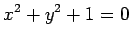

Inhalt Index DeskTop Bronstein

 Geometrie Vektoralgebra und analytische Geometrie Analytische Geometrie der Ebene Spezielle Punkte in der Ebene
Geometrie Vektoralgebra und analytische Geometrie Analytische Geometrie der Ebene Spezielle Punkte in der Ebene


Jeder Gleichung F(x,y) = 0 für die Koordinaten x und y entspricht eine Kurve, die die Eigenschaft hat, daß die Koordinaten jedes beliebigen Kurvenpunktes P der Gleichung genügen und daß umgekehrt jeder Punkt, dessen Koordinaten diese Gleichung erfüllen, auf der Kurve liegt. Die Menge dieser Punkte wird auch geometrischer Ort genannt. Wenn die Gleichung F(x,y) = 0 von keinem reellen Punkt der Ebene erfüllt wird, dann gibt es keine reelle Kurve; man spricht von einer imaginären Kurve.
Man spricht von einer algebraischen Kurve F(x,y) = 0, wenn F(x,y) ein Polynom ist, und nennt seinen Grad die Ordnung der Kurve. Wenn die Gleichung der Kurve nicht auf die Form F(x,y) = 0 mit F(x,y) als Polynom gebracht werden kann, dann spricht man von einer transzendenten Kurve.
Die Gleichungen von Kurven in anderen Koordinatensystemen können in analoger Weise betrachtet werden. Im weiteren werden aber, falls nicht ausdrücklich darauf hingewiesen wird, nur die kartesischen Koordinaten verwendet.
| Beispiel A |
|
: algebraische, imaginäre Kurve, |
| Beispiel B |